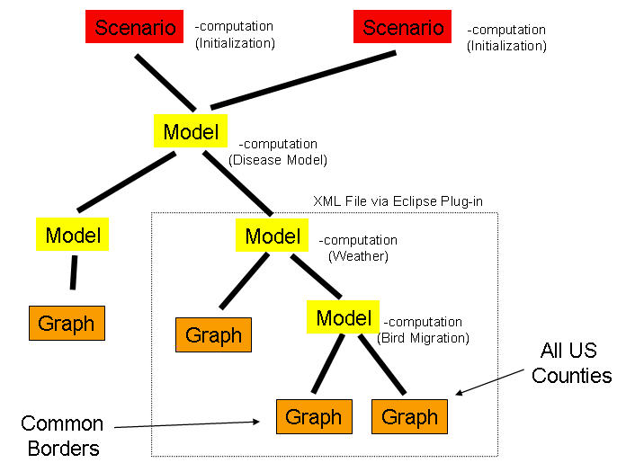

At its core STEM is a discrete event simulation system. It begins with an initial "simulation state" and then proceeds in step-wise fashion to determine the next state of the Simulation as a function of the current state and a parameter that specifies the current "time". It uses a "graph" to represent the state of the Simulation at each of its steps.
A graph is a simple, but powerful, mathematical abstraction for representing "entities" (i.e., things in the world) and their relationships. More formally, a graph is a set of "nodes", "edges" and "labels", where Nodes generally correspond to entities and edges link two nodes and represent some relationship between them. Labels are attached to either a node or an edge and represent some aspect of their host (like the name of the entity, or the name of the relationship). Each node may have more than one label, but each edge will only have one.
In STEM, nodes typically represent geographic regions while edges represent relationships between geographic regions. There may be any number of edges between any two nodes, as there may be any number of relationships between any two geographic locations. A label on a node might represent the physical area of the corresponding geographic location, the number of population members of a particular type that live there, or a mathematical representation of the state of a particular disease at that location. An edge between two nodes might represent a relationship such as the sharing of a common border (i.e., two regions are physically adjacent and could easily exchange population members); a different edge between the same two nodes might represent a road that connects the two locations. In the first case, the label for a border edge might record the length of the border between the two locations; in the later case, the label might indicate the type of road and how much traffic it carries. Completely different edges could also exist, for instance ones that represent the flight path of migratory birds. The graph that includes all of the nodes, edges and labels necessary to represent the state of the simulation is called the canonical graph.
A Simulation in STEM is created from a canonical graph. The specification of how to create the graph is represented by a Scenario (defined below).
The execution of a Simulation begins with an initialized canonical graph and a starting time. The first step in a Simulation is to determine the next point in time that will be used to update the state of the canonical graph. With this value determined the internal STEM Simulation "engine" invokes, in a very specific order, a set of computations associated with the canonical graph. These computations take the time point as input and compute the "next" state of the graph as it will be at that time. When these computations are complete, the state of the entire graph is changed to the "next" value just computed. This process continues until stopped by the user, or, if specified, a predetermined end-time is reached.
One of the main features of STEM, and the one that makes it such a powerful modeling system, is its framework for specifying the features of a Simulation. This framework allows a Simulation to be composed from many different reusable components that are combined to form the Simulation's canonical graph, computational elements and sequence of time points.
This approach is extremely flexible and powerful. The components can be from many different sources and can be exchanged among users. The components can also be combined to create larger structures which then can become reusable components themselves. For instance, it is possible to create a detailed model of a country and then reuse that model as a component in many different Simulations. Similarly, computational aspects of a Simulation such as a specialized disease model can be developed by an individual researcher and then used by many others in their models. The ability of STEM to combine components from different sources makes it possible to leverage the varied expertise of different model builders in a way that has never before been possible.
To foster reuse and collaboration, each component in the framework has a set of Dublin Core metadata associated with it. This metadata records important attributes of the component such as its title, descriptive text, the name of the original creator, any literature citations associated with it (e.g., a paper describing a particular disease model) and many others such as important dates, spatial characteristics. This information allows modelers to know exactly what they are using in their models.
The STEM compositional modeling framework consists of eight components that constitute the "building blocks" of any Simulation. These are: Scenarios, Sequencers, Decorators, Models, Graphs, Modifiers, Triggers, and Predicates. In addition, a sequence of related Simulations called a Batch, can be defined using components called an Experiment and Modifier.
The main component of a Simulation is a Scenario. When a Simulation is run in STEM, it is always created from a Scenario. A Scenario logically collects together three other types of components, a single Sequencer, a set of Decorators, and a single Model. Together, these components can be used to create a Simulation.
A Scenario can be created using the Scenario Wizard and edited using the Scenario Editor.
A Sequencer is the component of a Simulation that determines the sequence of time values that will be used to compute the next state of the canonical graph. It may produce values that are at fixed intervals of time, or it may vary the duration of the intervals between points. The values it creates are in simulated "STEM Time", but there is no restriction preventing the values from reflecting "wall clock" time. This can be useful for "Simulations" that incorporate external "real-time" data values from databases or other sources such as weather observations.
A Sequencer can be created using the Sequential Sequencer Wizard or the Real-time Sequencer Wizard and edited using the Sequencer Editor.
A Decorator is the framework's computational component. Every Decorator can participate in the initialization of the canonical graph, for instance by setting the values of existing labels or adding additional ones (i.e., they "decorate" the graph). Also, at each simulation cycle, they are responsible for determining the next state of the canonical graph by computing the values of labels as a function of the current Simulation time. In an epidemiological Simulation, a disease model would be implemented as a Decorator. There is no restriction on what a Decorator can do, it can, for instance, issue a query to a database or invoke a web service.
A Model is the component responsible for representing the contents of the canonical graph and for creating an instance of it when a Simulation is started from a Scenario. It combines with the final component of the framework called a Graph to form a tree. This tree is a hierarchical organization of the different contributions to the canonical graph. Model instances form the root and interior nodes of the tree while Graph instances form the leaves. The Model referenced by a Scenario is the root of such a tree.
Each Model contains three different collections. The first is a collection of "sub-Model" instances, each of which is essentially the root of a sub-tree. The second is a collection of Graph instances, and the third is another collection of Decorators.
A Model can be created using the Model Wizard and edited using the Model Editor.
Graph instances contain the actual components, Nodes, Edges, and Labels, that eventually will be contributed to a canonical graph. In the compositional framework, Graph instances are not true mathematical "graphs", they are better described as "graph fragments" as they may contain unresolved sets of Edges or Labels (and no Nodes). When the canonical graph is created, these fragments are combined and their content's connections eventually resolved (i.e., Edges and Labels will be mated with their appropriate "missing" Nodes). The resulting canonical graph is a true mathematical graph.
A Graph can be created using the Graph Wizard and edited using the Graph Editor.
Labels play a special role in the framework in that they can store two state values simultaneously. They have a "current" value which, collectively, records the current state of the graph. They can also have a "next" value which is used, collectively, to store the next state of the graph.
The collection of Decorators that may exist in each Model is similar to that contained in a Scenario instance. Its contents represents the computational component of the Model. The difference is that the Model Decorators are only able to modify the parts of the canonical graph that are contributed by the tree rooted at the Model. The Decorators in the Scenario, being above the root of the tree, are able to access the entire canonical graph. There is also a strict execution order of Model Decorators. The ones that are contributed lower in the tree are invoked before ones contributed above them. Scenario Decorators are invoked last. The order of invocation for Decorators at the same "level" is arbitrary.
A Model Decorator would typically be some computation that needs to be executed for each cycle of the Simulation, while a Scenario Decorator would typically be used to modify the initial state of the canonical graph to customize it for a particular "#scenario". For example, in an epidemiological Simulation, a disease model would be added to a Simulation as a Model Decorator while the exact location of an outbreak of a disease would be added to the Simulation by a Scenario Decorator. Many different Scenario instances could refer to the same Model (with its disease model), but provide different Decorators to specify different starting locations.
Decorators typically compute the next value for Labels in the canonical graph as a function of the current contents of the graph and the time.
The Figure below illustrates how these components are combined to create a Model that is used by two different Scenarios.

An Experiment is a specification of how to take a base Scenario and systematically modify it to create and run a sequence of related Simulations. For instance, one might want to explore the effect of different transmission rates for a disease in a particular Scenario. An Experiment allows one to specify the (base) Scenario and a collection of Modifiers that know how to modify it in specific ways. The modified Scenario instances can then be used to create Simulations.
To initiate the creation of the derivative Scenarios and subsequent Simulations, an Experiment can be run just like a Scenario to create a type of execution unit called a Batch.
An Experiment can be created using the Experiment Wizard and edited using the Experiment Editor.
A Modifier is a specification of how to systematically change the values of one or more features of a Scenario. There are two types of Modifiers. A Range Modifier modifies numeric features by assigning them values from a specified "range" of values, while a Sequence Modifier modifies features by assigning them successive values from a prespecified ordered collection.
A Modifier can be created using the Modifier Wizard and edited using the Modifier Editor.
A Range Modifier specifies a range of values for a numeric feature and an increment value. It modifies a numeric feature by first assigning it a starting value and then it subsequently assigns values generated by adding an increment value to the previously assigned value until the result exceeds a specified end value. If the start value is greater than the end value, then the increment must be negative.
A Sequence Modifier specifies a sequence of values for an arbitrary feature. It modifies the feature by assigning it, in sequential order, the values in the sequence.
A Trigger is a special kind of Decorator that combines a Predicate with a reference to another Decorator. Its role is to conditionally execute the Decorator it references if certain conditions exist in the Simulation. Typically, the Decorator referenced by the Trigger will be a Modifier which will be configured to alter some aspect of the running Simulation. For instance, a Modifier could change the values on Labels on an Edge or Node in the canonical graph. Those values could represent such things as the operational status of an airport, or the status (open or closed) of a road between two regions. A modifier can also modify another Decorator active in a Simulation. An example would be changing the configuration values of a Disease Model.
The operation of a Trigger is conceptually simple, on each simulation cycle, the Triggers contained by a Scenario are executed, just like the other Decorators, to update the canonical graph. The first thing the Trigger does is evaluate the Predicate it references. If the Predicate evaluates to False, then the Trigger simply returns without performing any other actions. If, however, the Predicate evaluates to True, then the Trigger allows the Decorator it references to update the canonical graph. So long as the Predicate returns True the referenced Decorator will be executed. If the Decorator is a Modifier then it will step through each of its configured modifications each time it is activated until all modifications have been completed.
A Trigger can be created using the Trigger Wizard and edited using the Trigger Editor.
A Predicate is a boolean expression that returns True or False depending on testable conditions in a running Simulation and the expression itself. Instances of Predicates are referenced by Triggers and their logical values are used to control the execution of a Decorator referenced by each Trigger.
Arbitrary logical expressions can be expressed in a Predicate, but currently, due to implementation limitations, the only testable conditions are the current and elapsed times in a running Simulation. In future versions of STEM, a richer set of conditions will be available. The testing of time is still an extremely useful condition as it allows for specific modifications to be made to a Simulation at precise points in time.
A Predicate can be created using the Predicate Wizard and edited using the Predicate Editor.
When is Simulation is started, the first operation is to create the canonical graph. This is accomplished by recursively descending the tree rooted by the Model referenced by the Scenario. As the canonical graph is constructed, connections between Labels and Edges in the graph fragments are resolved and then each Model Decorator is invoked and given the opportunity to "decorate" the canonical graph as part of its initialization. When this is complete, the Scenario Decorators are invoked to give them the opportunity to decorate the canonical graph.
When the canonical graph has been constructed and initialized by the Model and Scenario Decorators, the Simulation can begin its first cycle. The first step of the Simulation is to determine if the Simulation has completed its sequence of cycles. The answer to this question is provided by the Sequencer that is referenced by the Scenario from which the Simulation was started. If the answer is "No," and the Simulation should continue, the Sequencer will provide a value that represents the "time" of the next cycle. The STEM Simulation engine then takes that value and invokes each of the Model Decorators (in proper order) passing them the time value. They perform their computations and then the Scenario Decorators are invoked in the same manner. Frequently, the Scenario Decorators will not have any computations to perform after they have done their initialization, but there is no restriction that enforces this.
When the Decorators are finished, the Simulation engine tells the canonical graph to switch to its "next" state. This means that all of the Labels exchange their "current" and "next" values. This completes the first cycle. The process begins the next cycle with the Sequencer determining if the sequence of simulation cycles is complete.
A Batch is created when an Experiment is executed. When a Batch runs, it first takes the base Scenario of the Experiment, applies the Modifiers referenced by the Experiment and creates a new derivative Scenario. It then initiates the execution of a Simulation from the derived Scenario. When that Simulation completes, the Batch repeats the process until the Modifiers indicate that there are no additional modifications to make, at which point the execution of the Batch is complete and it exits.